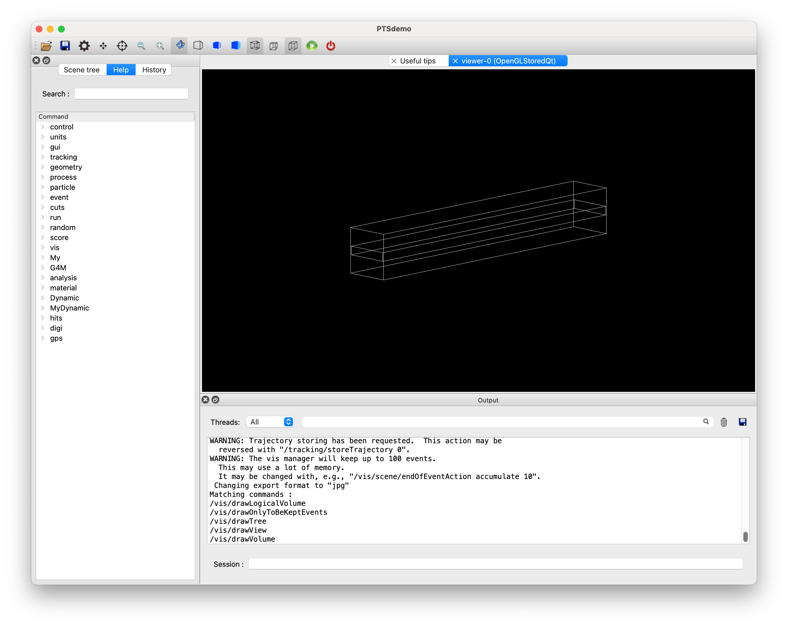
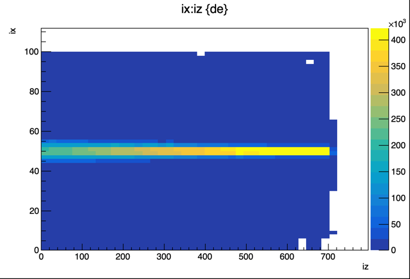

Example A6(ParallelWorld-Score）
Geant4では通常は、ジオメトリのオーバラップが許されませんが、実体が置かれたシミュレーション空間と並列するパラレルワールドを用いることで、自由なスコアリング領域を定義することが可能です。
ここでは、パラレルワールドの作成方法とスコアリングへの適用方法を解説します。
パラレルワールド・スコアリング
パラレルワールドの作成
パラレルワールド用スコアリングプロセスの有効化
パラレルワールドでのスコアリングジオメトリ構築
スコア方法
以下、PTSIMの実行ディレクトリ(例: ~/PTSproject-install/PTSapps/DynamicPort)で作業します。
例題マクロファイル
PTSIMコードに付属するマクロファイルexampleA6.macをコピーして用います。
$ cp ./macros/tut/exampleA6.mac .
実行
$ ./bin/PTSdemo -i exampleA6.mac
簡素設定のために、治療室のみの体系となっていますが、治療室にビーム機器などが配置されていてもパラレルワールドのスコアリングは問題なく機能します。

この状態ではパラレルワールドのボリュームが見えていない状態です。 パラレルワールドのスコアリングボリュームを可視化します。
Session: /vis/drawVolume worlds
/vis/drawVolumeコマンドの引数をworldsとすると、パラレルワールドのボリュームも表示できます。
下記の表示では、治療室に板上のジオメトリが配置されています。可視化をスキップしていますが、この板は格子状に切り分けられており、セルでの粒子情報をスコアできるようになっています。

終了
Session: exit
マクロファイルの解説
解説するコマンド部分のみを抜粋して説明します。 このマクロファイルでは、実空間(Mass-world)は治療室のみで、パラレルワールドに水ファントムのビームモジュールをスコアリングボリュームとして配置します。水ファントムの物質は無視されてスコアリングのみに用いられます。
1#
2# (PreInit State)
3/control/verbose 1
4#
5# Material
6/control/execute ./macros/common/materials.mac
7#
8# PhysicsList
9/control/execute ./macros/common/phys.mac
10#
11# System and module registration
12/G4M/System DynamicPort
13/Dynamic/Module/Room/register 525. 525. 3550. mm
14/Dynamic/Module/WaterPhantom/register Phantom
15#
16# Create Parallel World
17/My/DetConstruction/createPW paraWorld0
18#
19# Activate Parallel World Process
20/My/physics/pwProcess paraWorld0 false
21#
22#
23# Run Initialize
24/run/initialize
25#
26# (PreInit State)
27#
28# Primary particle
29/My/PrimaryGenerator/select GPS
30/control/execute ./macros/common/gps.mac
31#
32# Scoring volume using WaterPhantom
33/G4M/Module/Phantom/size 500. 100. 3550.0 mm
34/G4M/Module/Phantom/dim 100. 1. 710.
35/G4M/Module/Phantom/material G4_AIR
36#
37# Install in the ParallelWorld
38/G4M/Module/install Phantom paraWorld0
39#
40# Scoring
41/My/runaction/dumpfile A6.root
42/My/runaction/ntuple/merge true
43#
44# Track analysis
45/My/runaction/ntuple/create NT Phantom/HitsCollection
46/My/runaction/ntuple/addColumn NT pid I
47/My/runaction/ntuple/addColumn NT ix I
48/My/runaction/ntuple/addColumn NT iz I
49/My/runaction/ntuple/addColumn NT de F keV
50/My/runaction/ntuple/showScColumn NT
51#
52# BeamOn
53#/run/beamOn 100
54#
Parallel Worldを作成する
パラレルワールドの作成は、以下のようにパラレルワールドにつける固有名を引数にコマンドを実行します。
PreInit> /My/DetConstruction/createPW paraWorld0
この例では、固有名はparaWorld0となります。複数のパラレルワールドを作成することができ、後に作成したものが呼び出し時に優先されます。複数のパラレルワールドを作成すると、粒子追跡の観点からパフォーマンスが低下しますので利用する際には検討が必要です。
Parallel World用のプロセスを有効化
粒子をトラッキングする際にパラレルワールドを参照するように、専用のプロセスを追加します。
PreInit> /My/physics/pwProcess paraWorld0 false
１番目の引数がパラレルワールドの固有名です。２番目の引数はパラレルワールドの物質を利用するかどうかを指定します。スコアリング用であれば、物質は不要であるのでfalseにします。
パラレルワールドでのスコアリングジオメトリ構築
ジオメトリそのものは、通常のビームモジュールの扱いと変わりません。今回は、水ファントムのビームモジュールを用います。
水ファントムビームモジュールの登録
PreInit> /Dynamic/Module/WaterPhantom/register Phantom
水ファントムの設定
Idle> /G4M/Module/Phantom/size 500. 100. 3550.0 mm
Idle> /G4M/Module/Phantom/dim 100. 1. 710.
/G4M/Module/Phantom/material G4_AIR
これらは通常の水ファントム設定と同じ手順です。
パラレルワールドへの実体化 設定した水ファントムのジオメトリを、パラレルワールドで実体化します。
Idle> /G4M/Module/install Phantom paraWorld0
１番目の引数が、配置するビームモジュール名Phantom、２番目の引数がパラレルワールドの固有名paraWorld0です。
通常のinstallコマンドとの違いは、パラレルワールドの固有名を指定するところだけです。
スコアリング スコアリングに関するコマンド部分は、通常の手順と全く同じです。
/My/runaction/dumpfile A6.root
/My/runaction/ntuple/merge true
#
/My/runaction/ntuple/create NT Phantom/HitsCollection
/My/runaction/ntuple/addColumn NT pid I
/My/runaction/ntuple/addColumn NT ix I
/My/runaction/ntuple/addColumn NT iz I
/My/runaction/ntuple/addColumn NT de F keV
/My/runaction/ntuple/showScColumn NT
#
/run/beamOn 10000の結果の例を示します。
$ root A6.root
root[] NT->Draw("ix:iz","de","colz")

以上